Generics, Traits and Lifetimes
one shape, many types. shared behavior. and the names that keep references honest.
Generics
Book · §10.1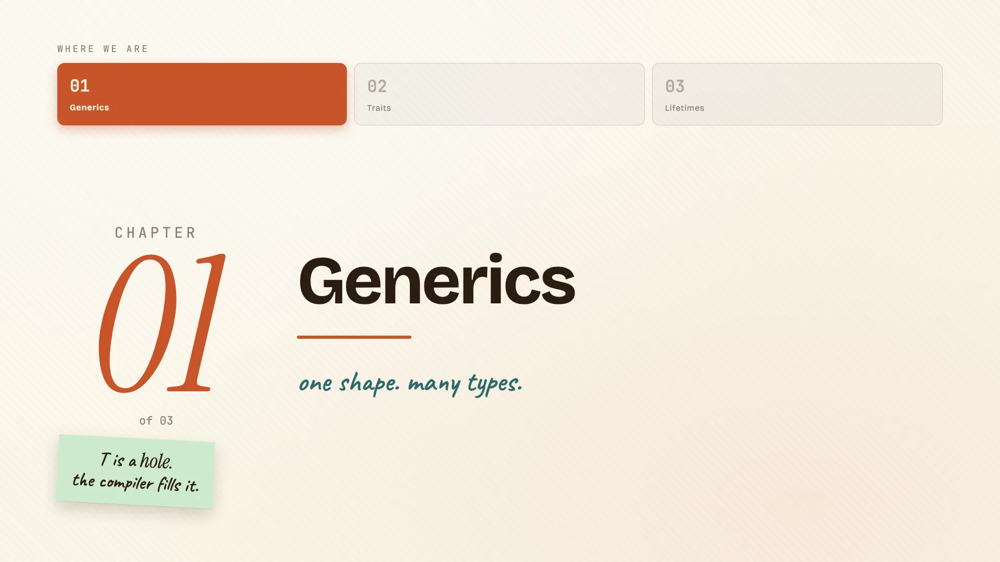
Three ideas live in one chapter of the book. We start with generics: writing code once and letting it work for many types.
The problem: writing it twice
You've felt this one. You write a function that finds the largest number in a list. Then you need the same thing for characters, so you copy it, paste it, and change one word.
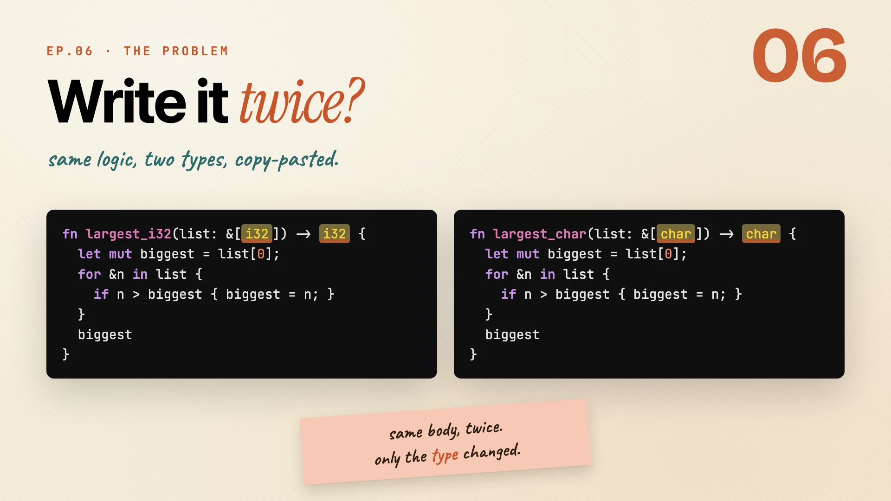
fn largest_i32(list: &[i32]) -> i32 {
let mut biggest = list[0];
for &n in list {
if n > biggest { biggest = n; }
}
biggest
}
fn largest_char(list: &[char]) -> char {
let mut biggest = list[0];
for &n in list {
if n > biggest { biggest = n; }
}
biggest
}
Put them side by side and look closely:
- Same logic, same loop, same comparison.
- The only difference is
i32versuschar.
That's real logic, duplicated, to swap a single type. Every bug you fix in one, you have to remember to fix in the other. There's a better way, and it's the whole point of this chapter.
Remember: same body, twice. only the type changed.
One function, every type
You wrote largest once for i32, then copy-pasted it for char. Same body, different type. Generics let you stop copying.
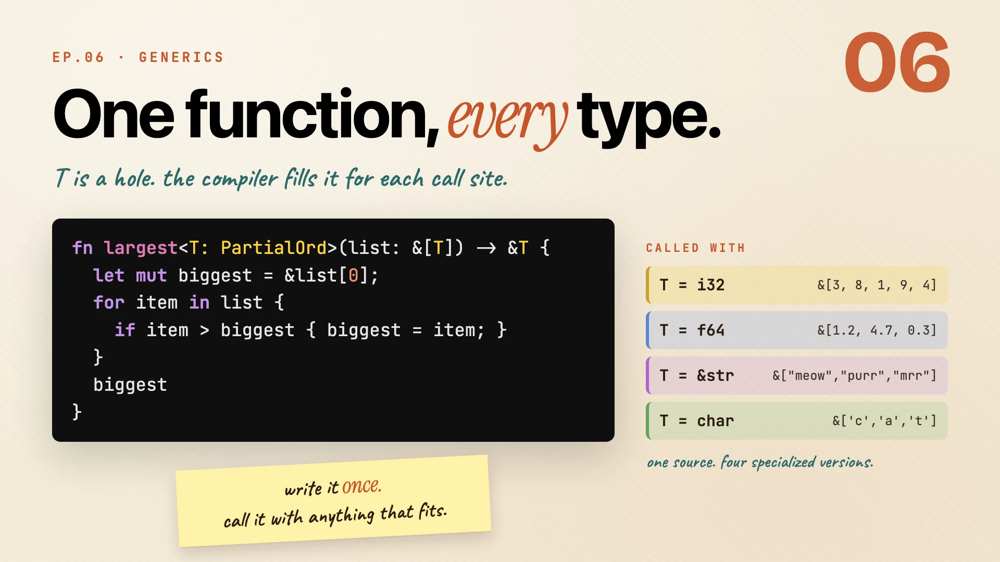
Here's the signature, which is where all the new syntax lives:
fn largest<T: PartialOrd>(list: &[T]) -> &T {
// ...find the biggest item...
}
Read it piece by piece:
<T>introduces a type parameter.Tstands in for a type you haven't picked yet. The caller picks it, the compiler fills it in.T: PartialOrdis a bound, and it reads as a promise:Thas to be a type you can compare with<and>.largestneeds to ask "is this bigger?", so the type has to answer. (PartialOrdis a trait. More on those next chapter.)list: &[T]is a borrowed slice. The function looks, it doesn't take.-> &Thands one back by reference.
Now call it with anything that fits the promise:
| You call it with | T becomes |
Works? |
|---|---|---|
&[3, 8, 1, 9, 4] |
i32 |
yes |
&[1.2, 4.7, 0.3] |
f64 |
yes |
&["meow", "purr", "mrr"] |
&str |
yes |
&['c', 'a', 't'] |
char |
yes |
One function. The compiler stamps out a specialized copy for each type you actually use, and each runs as fast as a hand-written version. Generics aren't slower. There's no runtime guessing, the cost is paid once, at compile time.
Remember: write it once, call it with anything that fits the promise.
Generic structs
Generics aren't only for functions. A struct can carry a type parameter too.
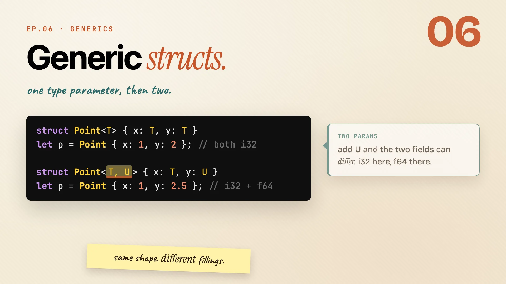
struct Point<T> {
x: T,
y: T,
}
let p = Point { x: 1, y: 2 }; // both i32
- The
<T>after the name works exactly like it did on functions. - Both fields use the same
T, soxandyhave to be the same type.
What if they should differ? Add a second name:
struct Point<T, U> {
x: T,
y: U,
}
let p = Point { x: 1, y: 2.5 }; // i32 and f64, together
| Definition | x and y |
|---|---|
Point<T> |
must be the same type |
Point<T, U> |
can be different types |
Same shape, different fillings. You pick the types each time you build one.
Remember: same shape. different fillings.
You've used generics already
Here's the part you'll like. You've been using generics this whole time without calling them that.
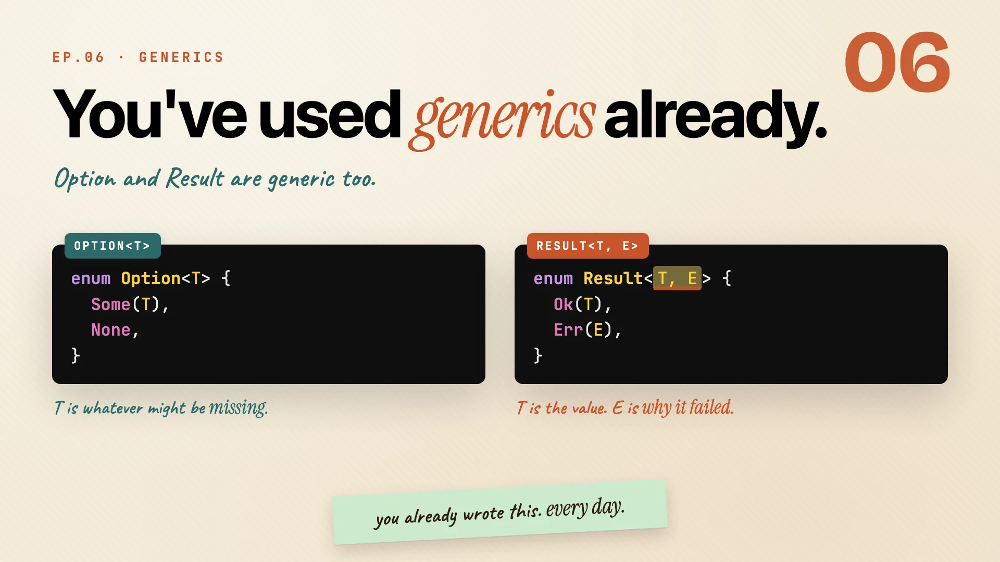
enum Option<T> {
Some(T),
None,
}
enum Result<T, E> {
Ok(T),
Err(E),
}
Option<T>carries one type parameter.Tis whatever value might be there, or might be missing.Result<T, E>carries two.Tis the value when things work,Eis the reason when they don't.
Every time you wrote Option<String> or Result<u32, MyError>, you were filling in those type parameters. Generics were never the scary part.
Remember: you already wrote this. every day.
Traits
Book · §10.2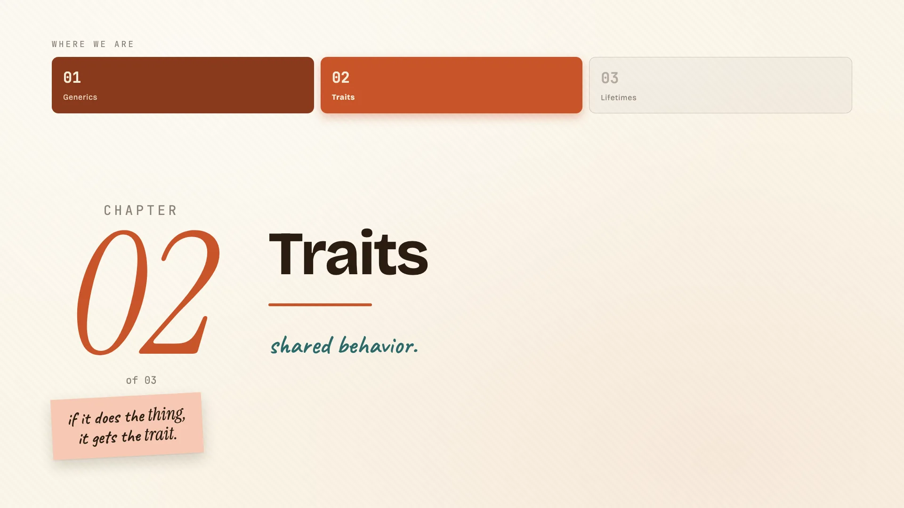
Generics covered types. Traits cover behavior: how to say "any type that can do this thing."
Traits name behavior
A trait is a promise about what a type can do. It names a capability without writing it.
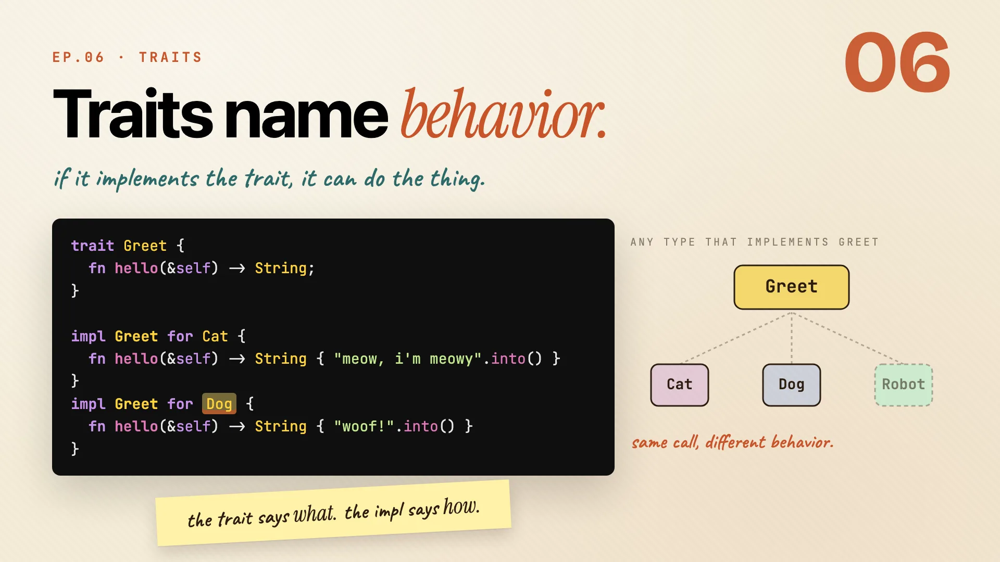
trait Greet {
fn hello(&self) -> String;
}
Greet says: anything with this trait has a hello. It doesn't say what hello returns yet. Each type fills that in:
impl Greet for Cat {
fn hello(&self) -> String { "meow, i'm meowy".into() }
}
impl Greet for Dog {
fn hello(&self) -> String { "woof!".into() }
}
- Same method name,
hello. - A different body per type. The cat meows, the dog barks.
- Same call, different behavior, decided by the type.
Anything else can opt in later: a robot, a teapot, whatever you write next. Just add the impl.
Remember: the trait says what. the impl says how.
Default methods
A trait can ship a body, not just a name. That body is a default every type gets for free.
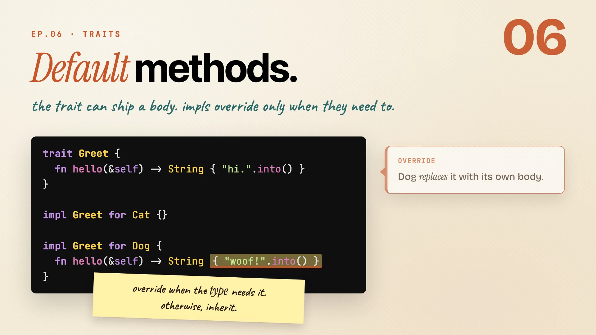
trait Greet {
fn hello(&self) -> String {
"hi.".into() // the default
}
}
Now a type can take the default by writing nothing, or replace it when it wants its own:
impl Greet for Cat {} // inherits "hi."
impl Greet for Dog {
fn hello(&self) -> String { "woof!".into() } // overrides
}
- Cat writes an empty impl and inherits the default.
- Dog overrides with its own body. Everyone else still gets the fallback.
Remember: override when the type needs it. otherwise, inherit.
Trait bounds narrow T
Back to generics, with one new power. The moment a function calls hello on a T, it has to promise that T can greet. That promise is a bound, and there are three ways to write the same one:
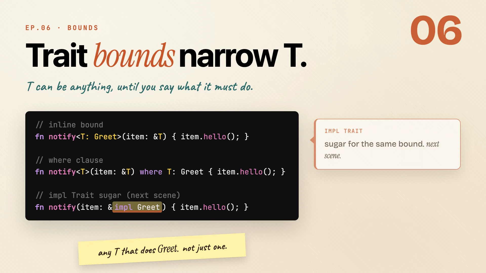
// 1. inline
fn notify<T: Greet>(item: &T) { item.hello(); }
// 2. where clause
fn notify<T>(item: &T) where T: Greet { item.hello(); }
// 3. impl Trait
fn notify(item: &impl Greet) { item.hello(); }
| Style | When to reach for it |
|---|---|
inline <T: Greet> |
fast, fine for a single bound |
where T: Greet |
reads better once bounds stack up |
&impl Greet |
shortest, more on it next |
All three say the same thing: any T that can Greet, not just one specific type.
Remember: any T that does Greet. not just one.
impl Trait, in and out
impl Trait is shorthand, but it means slightly different things depending on where it sits.
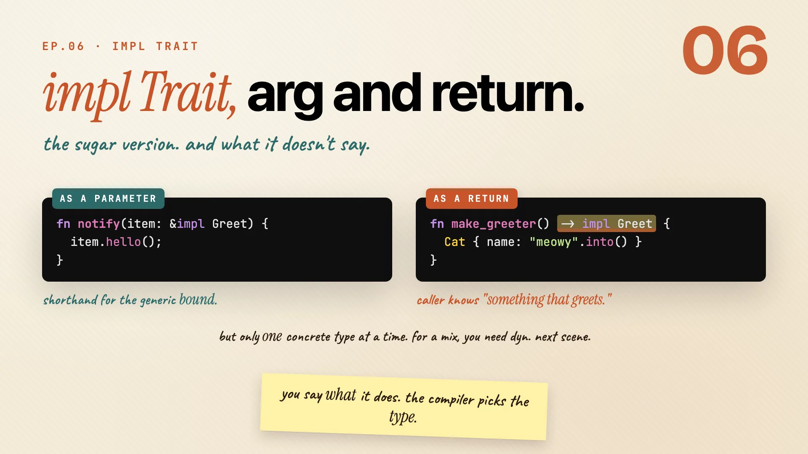
As a parameter, it's pure sugar for the generic bound you just saw:
fn notify(item: &impl Greet) { item.hello(); }
As a return type, it says "I'll hand back something that greets" and lets the compiler pick the concrete type:
fn make_greeter() -> impl Greet {
Cat { name: "meowy".into() }
}
- The caller knows only that the result can
hello. - The compiler quietly fills in the real type (here,
Cat). - The catch: one concrete type at a time. For a mix, you need
dyn, which is next.
Remember: you say what it does. the compiler picks the type.
dyn Trait, briefly
Everything so far picks one concrete type at each call. That's the fast path. But sometimes you want a cat and a dog in the same list:
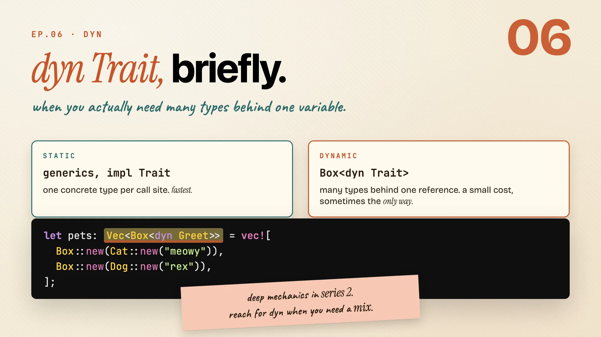
let pets: Vec<Box<dyn Greet>> = vec![
Box::new(Cat::new("meowy")),
Box::new(Dog::new("rex")),
];
Static (generics, impl Trait) |
Dynamic (Box<dyn Trait>) |
|
|---|---|---|
| types per spot | one concrete type | many, behind one reference |
| cost | fastest | a small runtime cost |
| use when | the type is fixed | you genuinely need a mix |
The deep mechanics are a Series 2 topic. The rule of thumb is enough for now.
Remember: reach for dyn when you need a mix.
Lifetimes
Book · §10.3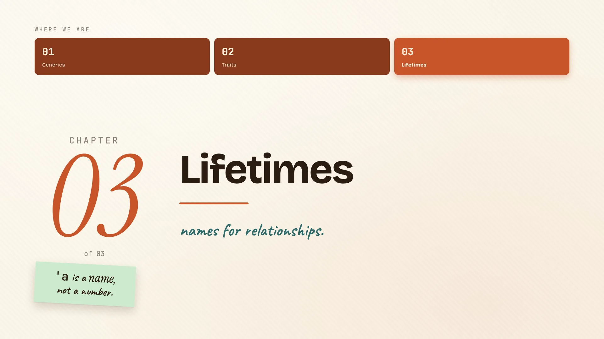
Lifetimes sound scary and aren't. They're how Rust makes sure a reference never outlives the thing it points to.
The dangling reference problem
Start with the bug lifetimes exist to prevent.
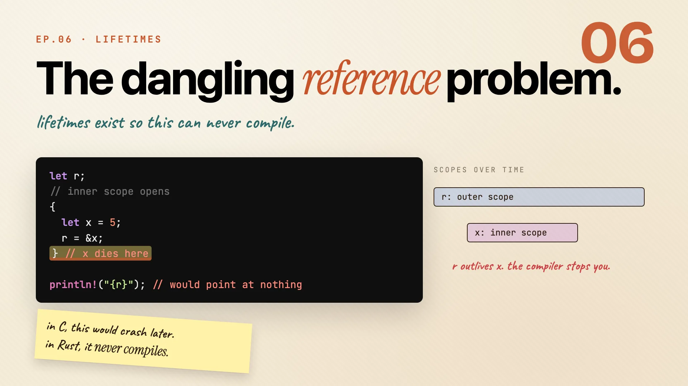
let r;
{
let x = 5;
r = &x;
} // x dies here
println!("{r}"); // r points at nothing
ris declared in the outer scope, so it lives a while.xis born inside the inner block and dies at the closing brace.rstill points at wherexused to be. That's a dangling reference.
In C, this compiles and crashes later, at three a.m. in production. In Rust, it never compiles in the first place.
Remember: in C this crashes later. in Rust it never compiles.
'a is a name, not a number
So how does the compiler check that? You give the relationship a name.
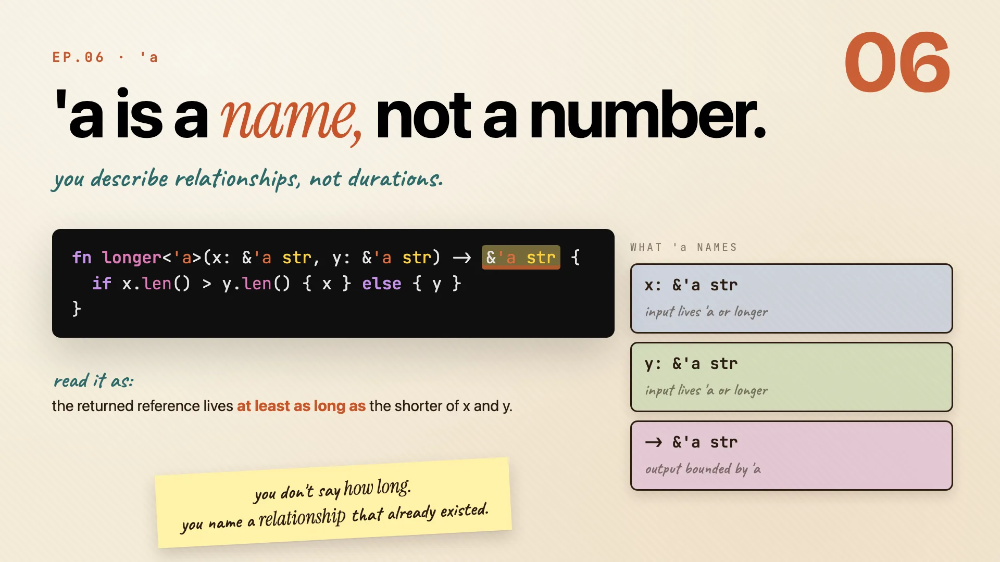
fn longer<'a>(x: &'a str, y: &'a str) -> &'a str {
if x.len() > y.len() { x } else { y }
}
The little 'a is not a duration. It's a label:
x: &'a strmeans x lives at least as long as'a.y: &'a strmeans y does too.-> &'a strmeans the result is bound by that same'a.
So the returned reference can't outlive the inputs it came from. You didn't say how long anything lives. You named a relationship that already existed.
Remember: you name a relationship, not a duration.
The three elision rules
Here's the relief: most of the time you don't write 'a at all. The compiler follows three rules and fills them in for you.
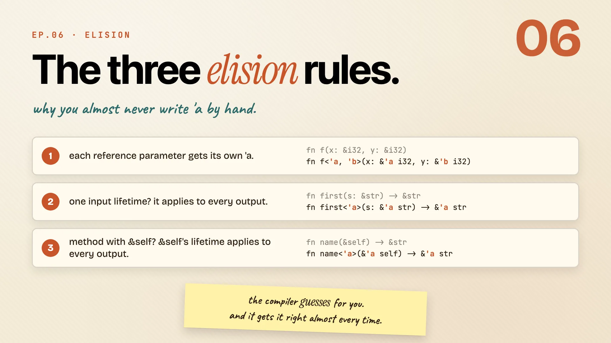
| Rule | What it does | Example |
|---|---|---|
| 1 | each reference parameter gets its own lifetime | fn f(x: &i32, y: &i32) |
| 2 | one input reference? its lifetime flows to every output | fn first(s: &str) -> &str |
| 3 | a method with &self? self's lifetime flows to the output |
fn name(&self) -> &str |
Between them, these cover almost everything you write, especially methods on a struct. You only annotate by hand when the compiler genuinely can't tell.
Remember: the compiler guesses for you, and gets it right almost every time.
What 'static really means
One last name to clear up: 'static. People read it as "lives forever" and panic. That's not it.
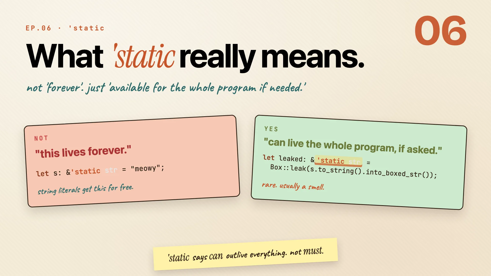
let s: &'static str = "meowy"; // every string literal is 'static
- It means "this can live for the whole program, if something needs it to."
- You've already used it: every string literal in your code is
'static, for free. - You can force it by leaking a value, but that's rare and usually a smell:
let leaked: &'static str = Box::leak(s.to_string().into_boxed_str());
Remember: 'static says can outlive everything, not must.
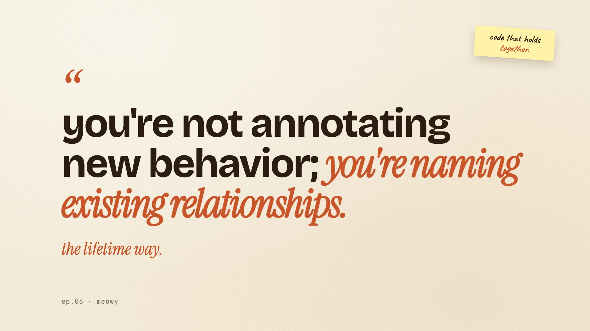
The whole episode in one line:
You're not annotating new behavior. You're naming relationships that already existed. That's the lifetime way, and honestly the generics and traits way too.
Cheatsheet recap
One line per idea, in order. Skim this when you just need the reminder.
| Idea | Remember |
|---|---|
| The problem: writing it twice | same body, twice. only the type changed. |
| One function, every type | write it once, call it with anything that fits the promise. |
| Generic structs | same shape. different fillings. |
| You've used generics already | you already wrote this. every day. |
| Traits name behavior | the trait says what. the impl says how. |
| Default methods | override when the type needs it. otherwise, inherit. |
| Trait bounds narrow T | any T that does Greet. not just one. |
| impl Trait, in and out | you say what it does. the compiler picks the type. |
| dyn Trait, briefly | reach for dyn when you need a mix. |
| The dangling reference problem | in C this crashes later. in Rust it never compiles. |
| 'a is a name, not a number | you name a relationship, not a duration. |
| The three elision rules | the compiler guesses for you, and gets it right almost every time. |
| What 'static really means | 'static says can outlive everything, not must. |
Practice: Rustlings
14_generics, 15_traits, 16_lifetimes.